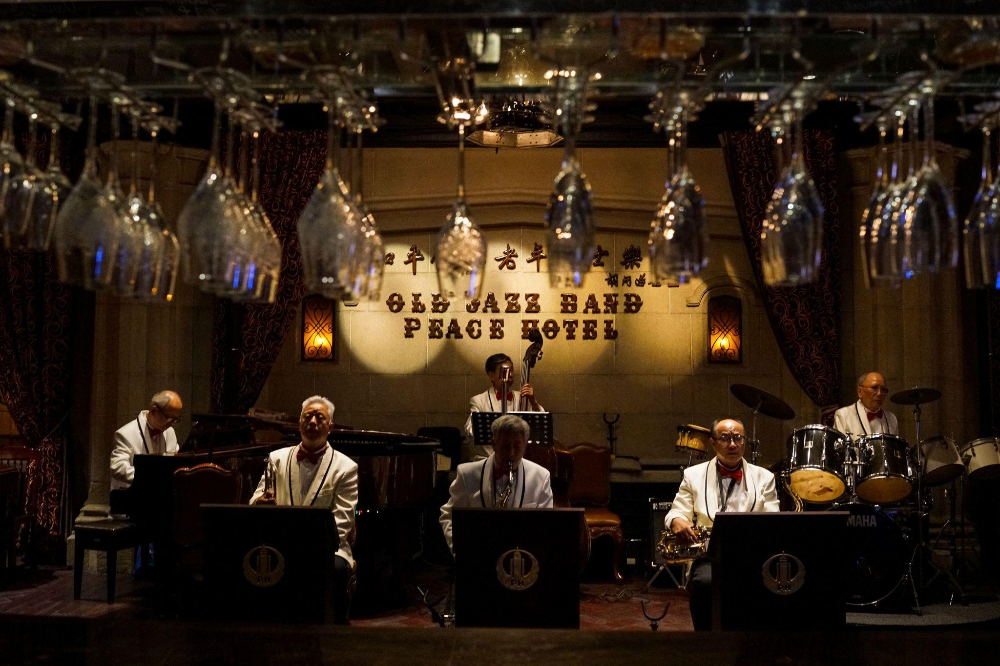
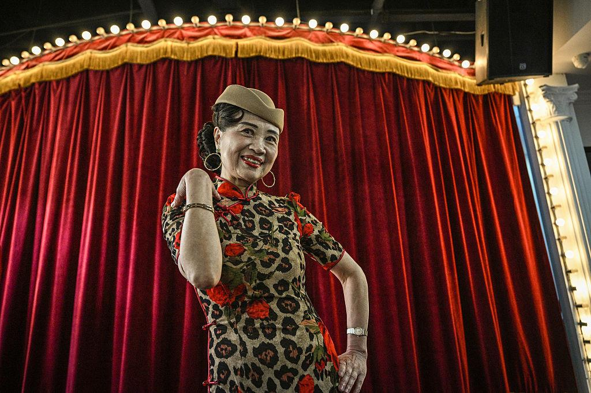
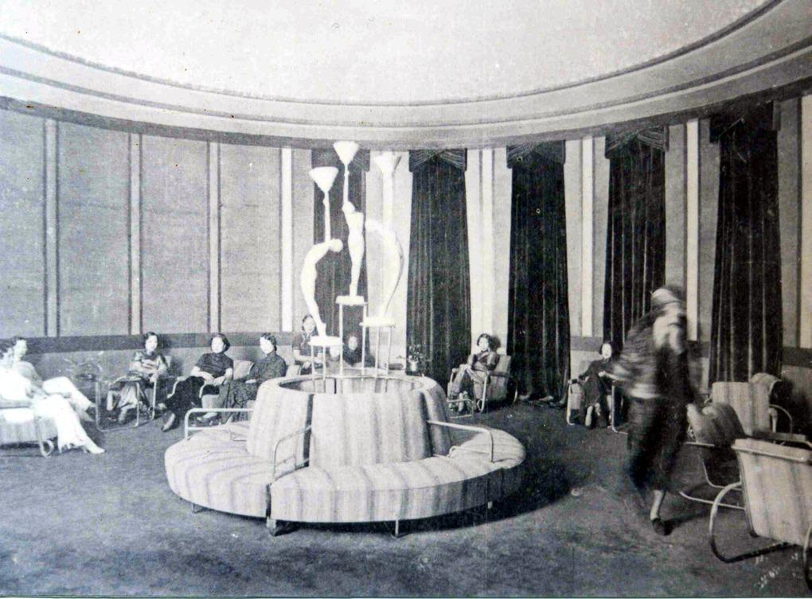

Shanghai Nightclub, 1929 — revised (lived experience)
You don’t arrive at a single place—you arrive at a threshold.
The car slows along a lit stretch of Shanghai. Electric light spills onto wet pavement. Neon hums faintly. The driver glances once in the mirror—not asking, just checking. If you don’t specify, he chooses the safe entrance. If you do, he adjusts without comment.
Inside, the air changes immediately—denser, warmer, perfumed and stale at once. Cigarette smoke hangs low, catching the light. You feel the room before you map it.
The room
The space is engineered.
Electric light—colored, shaded—warms skin and softens edges. Mirrors multiply the crowd so it feels larger than it is. Ceiling fans turn slowly, pushing humid air just enough to keep movement possible.
Nothing here is accidental. The room is built to hold attention.
The sound
A band is already playing.
Jazz, but not quite the jazz of New York City. The rhythm is there—brass, piano, drums—but phrasing slips slightly. Notes stretch, bend. You can’t fully predict it.
Conversations overlap the music:
English, controlled and clipped
Shanghainese, fast and fluid
Russian, edged with displacement
No single language dominates. The sound never resolves into one thing.
The movement
Everything is close.
Women in fitted qipao—silk catching and releasing the light—move between tables or onto the floor. Some are hostesses, working the room with practiced timing: sit, pour, laugh, suggest.
Men signal status differently:
A British trader with quiet certainty
A Chinese industrialist matching it, but on different terms
A Russian émigré performing a version of a life already gone
A hand on a wrist might be flirtation—or arrangement. You don’t always know which, and that ambiguity is part of the design.
The social layer (felt, not spoken)
This isn’t a single society. It’s overlap.
Foreign concessions mean different rules apply depending on where you stand. Influence is uneven but visible. Everyone understands the structure, even if no one names it.
So the room behaves like a temporary suspension:
Boundaries blur, but don’t disappear
Money moves quickly, quietly
Identity becomes flexible—but never fully secure
You feel it as a faint tension under everything.
The edges of the night
Nothing obvious breaks the illusion.
There are no open gambling tables in the main room, no overt scenes. But introductions happen. Suggestions are made. A hostess leans in, voice low. A doorman recognizes a signal.
If you choose to follow that thread, the space changes:
Light drops
Sound softens
Doors, curtains, thresholds appear
Not necessarily in this building—sometimes a floor above, sometimes a short drive away. The night extends outward in a network, not inward in a single reveal.
The underlying sensation
If you stay long enough, a pattern emerges:
Everything here is accelerated—but nothing is fully anchored.
The light is artificial. The music is hybrid. The identities are performed. The rules depend on where you are standing.
It feels modern—intensely so—but also provisional.